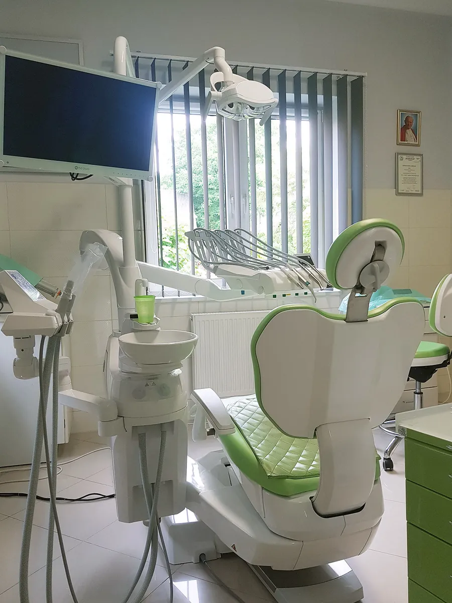

Leczenie zachowawcze
Żeby jak najdłużej zachować własne zęby.
Zakres
- Odbudowa kompozytem utraconych tkanek zęba
- Wzmacnianie korony zęba włóknem szklanym
- Odbudowa materiałem szklano-jonomerowym
- Odbudowa kątów i brzegów siecznych po urazach
Od pierwszego przeglądu po implanty. Rozwiń kartę, żeby zobaczyć dokładny zakres.
Żeby jak najdłużej zachować własne zęby.
Żeby martwy ząb dalej dobrze pracował.
Żeby uzupełnić brakujące zęby.
Dwie metody do wyboru: nakładkowa w domu (żel na noc, zwykle 5-7 nocy) albo lampą Beyond podczas jednej wizyty.
Usuwanie zębów, w tym zębów mądrości i zatrzymanych.
Wszczepianie implantów oraz korony i mosty porcelanowe na implantach.

Lakowanie, lakierowanie, lapisowanie i leczenie próchnicy zakończone kolorowym wypełnieniem.
Nauka szczotkowania, lapisowanie i jodowanie, pomoc w zwalczaniu nawyków powodujących wady zgryzu.
Leczenie paradontozy i chorób przyzębia, skaling ultradźwiękowy.
Zadzwoń, a dobierzemy termin. Gabinet przyjmuje w poniedziałki, wtorki, środy i piątki.